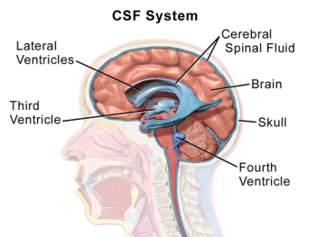
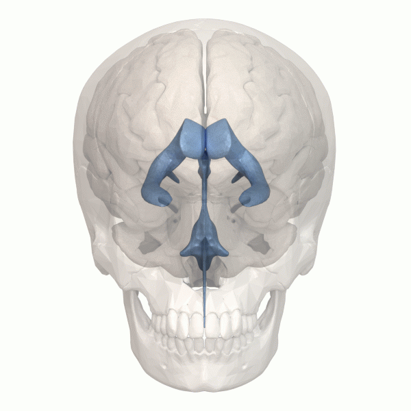
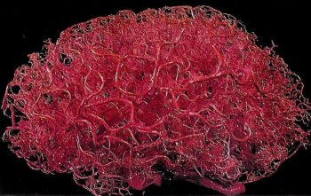

2.7: Non-Neuronal Structures in the Central Nervous System
Ventricular System and Cerebrospinal Fluid
The cerebral ventricular system is a set of interconnected cavities known as cerebral ventricles that produce and transport cerebrospinal fluid (CSF) (Shenoy & Lui, 2022). This ventricular system consists of 4 main ventricles—2 lateral ventricles, the third ventricle, the fourth ventricle, and the cerebral aqueduct (Figure 25). CSF is produced in the ventricles by a tissue called choroid plexus. It drains through sinuses around the brain and through lymphatic vessels. CSF fills the subarachnoid space around the brain, so the brain is suspended in CSF. CSF thus acts as a shock absorber to cushion and protect the brain. Additionally, floating in CSF reduces the effective weight of the brain from around 1500 grams to around 50 grams (Wright et al., 2012). Without CSF, the brain’s own weight would cut off blood supply and kill neurons especially in its lower regions. Finally, CSF circulates nutrients throughout the brain and helps clear waste products away from the brain.


Vasculature
The brain is an energetically demanding organ. It is only 2% of the body’s mass, but uses 20% of its energy when the body is resting (i.e., when muscles are not active). It relies on a constant supply of oxygen and glucose in the blood to sustain neurons—a disruption of blood flow to the brain leads to a loss of consciousness within 10 seconds. To deliver a constant flow of oxygenated blood, the brain has a complex and tightly regulated vasculature that directs blood to the most active brain regions. Four arteries feed the brain with oxygenated blood, forming a circle known as the circle of Willis. Major arteries branch off the circle of Willis to supply different regions of the brain. Branches of these arteries form progressively smaller arteries and arterioles that pass through the subarachnoid space and enter the brain. Inside the brain, they branch further to form a dense capillary network (Figure 26). A mind-blowing 1 to 2 meters of capillaries exist in every cubic millimeter of brain tissue. These capillaries are less than 10 microns in diameter, so occupy only 2% of brain volume. In the cerebral cortex, a capillary is typically within 10-20 microns from a given neuron. This dense vascular network allows efficient oxygen and glucose delivery to active neurons.
The blood supply is finely adjusted according to the needs of each brain region. Active neurons produce molecules that dilate smooth muscle cells and pericytes on local arterioles and capillaries, increasing blood flow in active regions. Increased blood flow to active brain regions typically exceeds oxygen demand, resulting in elevated local blood oxygen levels. The BOLD (blood oxygen level dependent) signal can be detected using magnetic resonance imaging and serves as a proxy for neuronal activity in experiments on brain function (see Chapter 4–Research Methods).

Text Attributions
This section contains material adapted from:
Hall, C. N. (2023). 2.1: Exploring the brain- a tour of the structures of the nervous system. In Introduction to Biological Psychology. University of Sussex Library. https://openpress.sussex.ac.uk/introductiontobiologicalpsychology/chapter/exploring-the-brain-a-tour-of-the-structures-and-cells-of-the-nervous-system/ License: CC BY-NC 4.0 DEED
Media Attributions
- CSF System © Wikipedia is licensed under a CC BY (Attribution) license
- Human ventricular system animation © Wikipedia is licensed under a CC BY (Attribution) license
- brainVesselsCorosionCast-768×486 © Hall, C. N. (2023). 2.1: Exploring the brain- a tour of the structures of the nervous system. In Introduction to Biological Psychology. University of Sussex Library. is licensed under a CC BY-NC-SA (Attribution NonCommercial ShareAlike) license


Interconnected cavities within the brain tissue that produce and secrete cerebrospinal fluid to protect the brain
Cerebrospinal fluid is an ultrafiltrate of plasma that surrounds the brain and spinal cord.